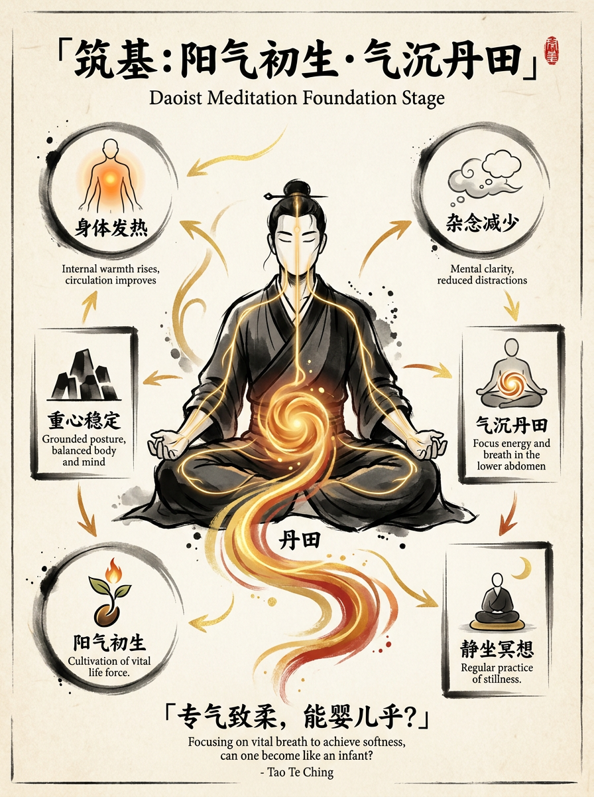
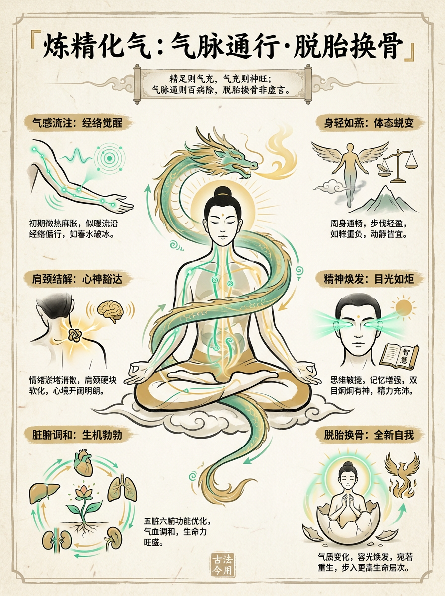
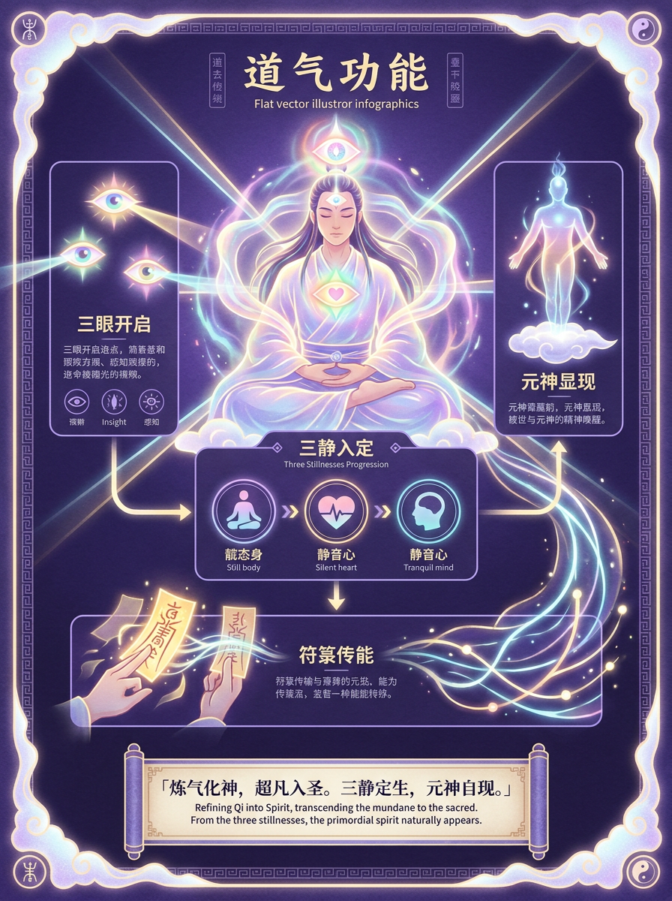
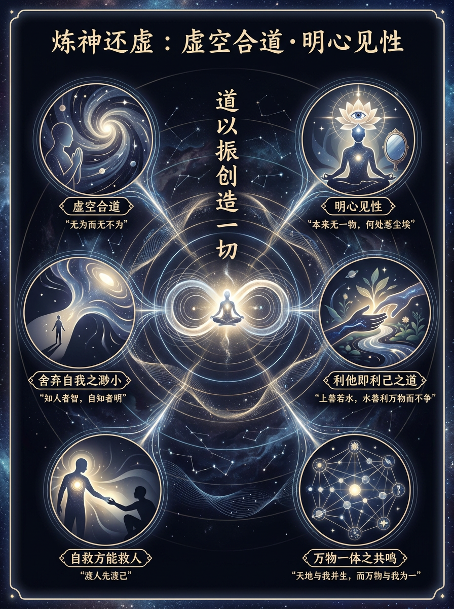
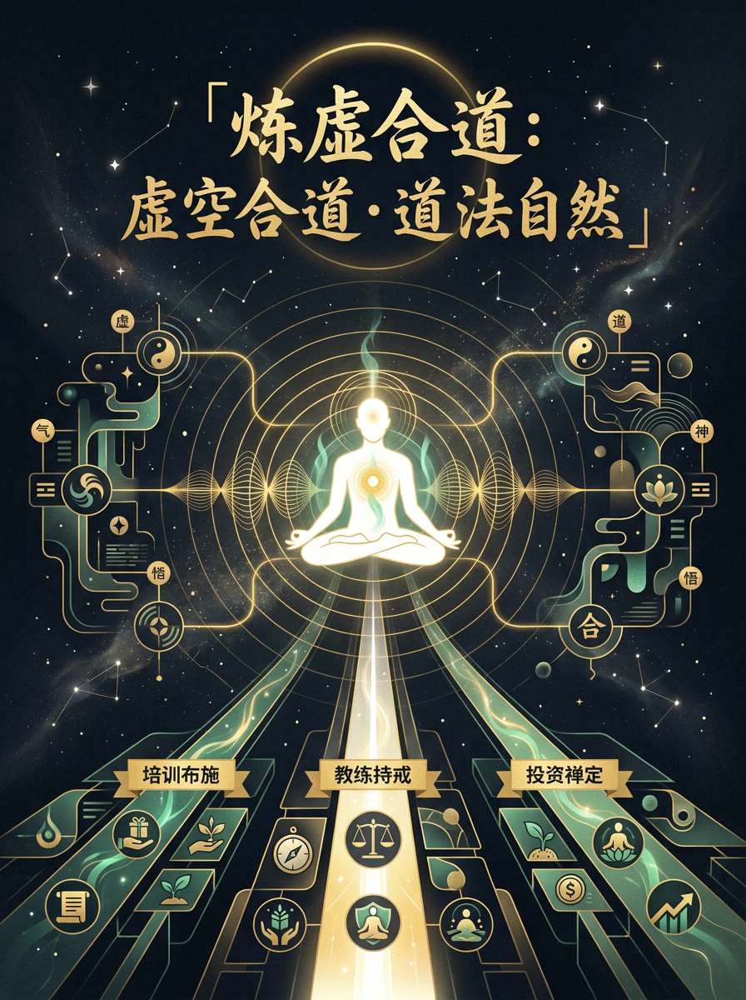
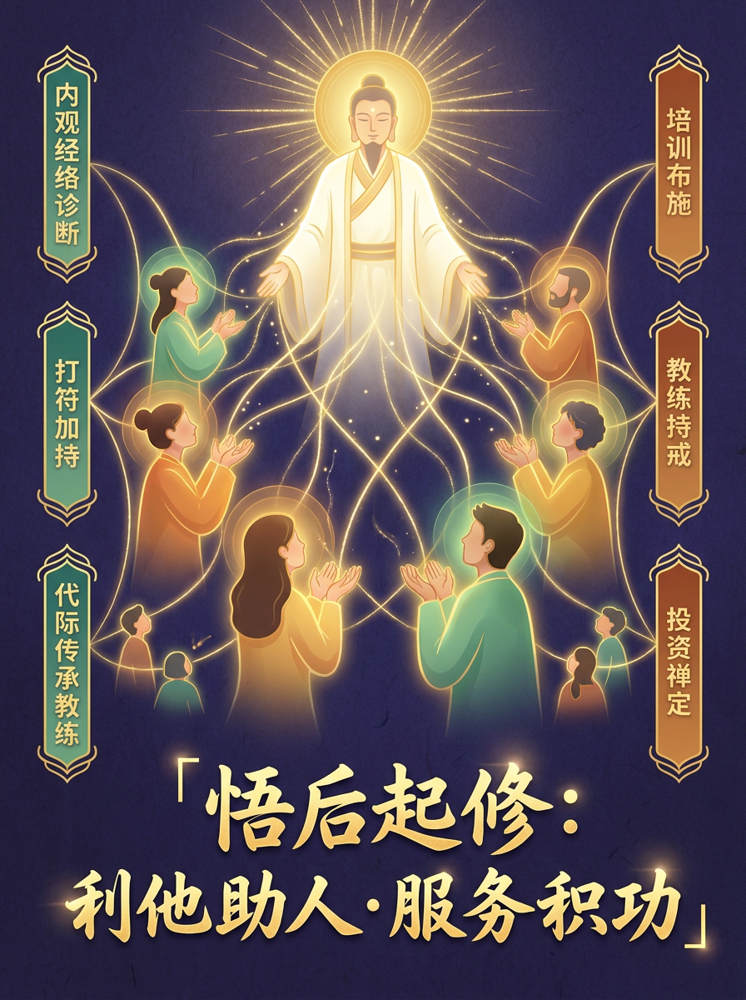

基于宗辉打坐实证，对照道藏经典逐一评点。
从筑基到还虚，从炼虚到悟后——六阶段完整修行路径，
含三要素开示：培训（布施）· 教练（持戒）· 投资（禅定）。
道藏《钟吕传道集》说：「凡人修炼，以长生为基，筑基为本。」
打坐，不是枯坐。是在安静中，让精气神运转，让元神显现，让心与道共振。
初学者最常犯的错误：以为打坐是「什么都不想」。错。打坐是「带着觉察去想」——想身体的感受，想气的流动，想念头从哪里来、到哪里去。
《太上老君常说清静经》：「人能常清静，天地悉皆归。」
清静不是空，是清明——清清楚楚看见自己。
修行四阶段，从筑基到还虚，从炼精到炼神到炼虚合道，道藏经典与身体实证相互印证。以下分六个阶段详述。

筑基，就是把身体从「漏」修到「满」，从「摇」修到「稳」。道藏把身体比作年久失修的房子——墙壁有裂缝，屋顶有破洞，房梁歪斜。筑基，就是补墙、堵洞、正梁。
师门传承，是筑基的第一要义。道家修行，历来强调「法不轻传，师不顺路」——没有明师指点，纵使天天打坐，也可能在岔路上而不自知。明师的作用：① 传正确的方法（不盲修瞎练）；② 传师父的能量加持（筑基更快更稳）；③ 传祖师爷的信息（连接历代传承的力量）。杨辉入茅山/华光/青城三派，得师门护持，方能在打坐实证中步步验证道藏经典。师门传承，是修行人最珍贵的资产。
腿麻时不要急着换姿势，先感受这个麻从哪来，守住 3-5 分钟，热感就会出现。这是「炼精」的入手处。身体不动久了，心自然静；心不乱想了，神自然清。
师门传承提示：筑基第一步，先找一个明师。方法是根基，能量是加速器，传承是护城河。没有师门，你练的是自己的版本；有师门，你练的是历代验证过的版本。

精，是生命的物质能量。炼精化气，就是把物质能量转化成能在经络里流动的气。
比喻：精 = 原油，气 = 汽油，炼精化气 = 精炼原油成汽油。
打坐时身体某处特别堵，先问自己：最近什么事放不下？你会发现，身体的瘀结几乎都对应一个未处理的情绪。看见它，就是解结的开始。

气化神，就是能量升维：气是有形能量，神是无形智慧。
比喻：气 = 电（能量载体），神 = 光（能量的具体呈现）。

炼神还虚，是修行的转折点：从「向外求」到「向内看」——把「我」放下，看清楚「我」到底是什么。
「还虚」不是变成虚空，而是「看见」：我不是这个身体，不是我这个念头，不是我的情绪——我是那个能看见身体、念头、情绪的东西。
修行的入手处，就在每一个念头。不需要学更多，在已有的体会上感受得更精细。呼吸的冷热，丹田的温凉，眉心的胀紧——每一个细微的感受里，都有道。

炼虚合道，是修行从「自修」迈向「道法自然」的转折点。虚空合道之后，合道祖师爷在2026年5月2日给出关键定法——三要素：培训（布施）、教练（持戒）、投资（禅定），三者互为支撑、三位一体、三是功德所致。
三要素互为支撑：培训（布施）建立能量场，教练（持戒）深化使命，投资（禅定）确保安定。3 是功德所致——不是凑数，是天道数字。修颗粒度，不开新方向，在已知里挖未知入口。

悟后起修，是虚空合道之后的真正起点。证道不是终点，悟后才是起点——带着合道的体悟，进入红尘，在利他中继续修行。修行服务化：内观经络诊断 + 打符加持 + 代际传承教练，三位一体。
悟后起修的落脚点，是修行服务化：内观经络诊断 + 打符加持 + 代际传承教练，三位一体，构成了完整的修行服务产品。三要素（培训/教练/投资）互为支撑，3是功德所致——不是凑数，是天道数字。祖师爷35位已开示：修颗粒度，不开新方向，在已知里挖未知入口。